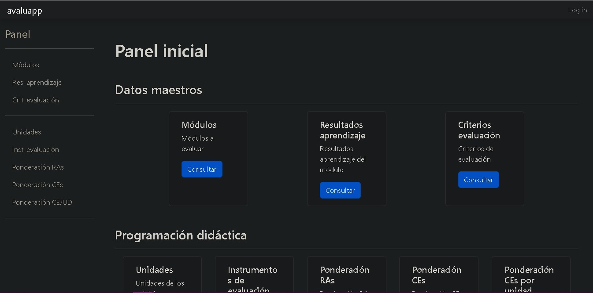

Cómo crear Mi Portfolio en Django
Para consultar la documentación visita Instalación Django Paso por Paso.

Comandos
Con estos comandos conseguirás crear tu primer proyecto en Django.
python3 -m venv [venv-name]- Crear el entorno virtual.source [venv-name]/Scripts/activate- Activar el entorno virtual.pip install Django==3.2- Instalar la versión de Django 3.2.pip freeze > requirements.txt- Creamos el fichero requirements y comprobamos que contiene las versiones concretas necesarias para reinstalar nuestro proyecto.django-admin startproject [project-name]- Creamos el primer proyecto Django.
Project layout
Este es un breve ejemplo de la estructura de carpetas que puedes tener nada más comenzar tu aplicación.
portFolioDjango/
__pycache__/
__init__.py # Archivo de configuración de importación.
asgi.py # Archivo de configuración utilizado para definir una aplicación ASGI y sus entornos de ejecución.
settings.py # Archivo de configuración y personalización de la aplicación web y del entorno de ejecución.
urls.py # Archivo de configuración que contiene una lista de patrones de URL y sus correspondientes vistas, utilizado para definir y gestionar las URL's de la aplicación web y controlar el comportamiento de la aplicación cuando se visitan esas URL's.
wsgi.py # Archivo de configuración utilizado para definir una aplicación WSGI y sus entornos de ejecución.
templates/
portfolio/ # Directorio de la app portfolio
base.html # Fichero html que servirá de base al resto.
categorias_dropdown.html
contacto.html
footer.html # Fichero html de footer
header.html # Fichero html de header
home.html # Fichero html de homepage
proyecto.html
year.html
400.html # Fichero html de error común
403.html # Fichero html de error común
404.html # Fichero html de error común
500.html # Fichero html de error común
db.sqlite3 # Archivo de bd
manage.py # Archivo ejecutable utilizado para ejecutar tareas de administración y mantenimiento de la aplicación.
... # Otras páginas, imágenes y archivos.
Tareas con manage.py
Estas son algunas de las tareas que puedes realizar con el fichero manage.py
python3 manage.py runserver- Iniciar el servidor de desarrollo de Django.python3 manage.py migrate- Crear una base de datos nueva o actualizar la base de datos existente.python3 manage.py startapp [appname]- Crear una nueva aplicación.python3 manage.py startproject [projectname]- Crear un nuevo proyecto.python3 manage.py test [appname]- Ejecutar pruebas con una aplicación de pruebas.python3 manage.py test [modulname]- Ejecutar pruebas con un módulo de pruebas.python3 manage.py createsuperuser- Crear un superusuario de Django.python3 manage.py help- Ver una lista de todos los comandos disponibles.python3 manage.py runserver --port 8080- Iniciar el servidor de desarrollo de Django en un puerto específico.python3 manage.py migrate --noinput- Crear una base de datos nueva evistando que se soliciten entradas adicionales al usuario.
Qué se podrá realizar con esta guía
| Podrás | No podrás |
|---|---|
| Realizar tu propio portfolio | Alimentar a tu mascota |
| Realizar otros proyectos con Django | Conseguir empleo |
| Crear tu propia aplicación en Django |
Y para finalizar, nuestra máxima siempre es:
No es un bug, es una característica no documentada (Alan J. Perlis).